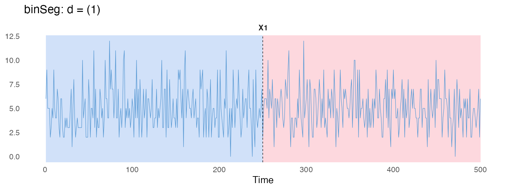

Custom cost functions
case-study-custom.RmdThis case study writes cost functions in R with
costFunc$new("Custom", ...) (see User-defined cost
functions). It checks one against a built-in cost, uses data that
were never passed to $fit(), and shows the risk that comes
with that.
Checking against a built-in cost
As a sanity check, re-implementing "L2" as a
"Custom" cost gives identical numbers:
myL2eval = function(segment, a, b){
segment = as.matrix(segment)
cm = colMeans(segment)
sum(sweep(segment, 2, cm, FUN = "-")^2)
}
customCF = costFunc$new("Custom", evalFun = myL2eval)
customCF$pass()
#> $costFunc
#> [1] "Custom"
#>
#> $evalFun
#> function (segment, a, b)
#> {
#> segment = as.matrix(segment)
#> cm = colMeans(segment)
#> sum(sweep(segment, 2, cm, FUN = "-")^2)
#> }
#>
#> $paramFun
#> NULL
set.seed(1)
tsMat = cbind(c(rnorm(100,0), rnorm(100,5,5)),
c(rnorm(100,0), rnorm(100,5,5))) # the series from the mean and variance case study
customObj = PELT$new(minSize = 1L, jump = 1L, costFunc = customCF)
customObj$fit(tsMat)
customObj$eval(0, 150)
#> [1] 3943.78which matches
exactly.
Using external data
The actual use case is a custom cost function that closes over data
the package was never explicitly given. For example, below,
externalSeries is captured purely through lexical scope (it
is never passed to $fit()), and evalFun uses
a and b to align it with each candidate
segment:
set.seed(1)
tsMat2 = cbind(c(rnorm(100, 0), rnorm(100, 4)))
externalSeries = as.matrix(rnorm(200)) # captured by closure, never passed to `$fit()`
externalRegCost = function(segment, a, b){
x = externalSeries[(a+1):b, , drop = FALSE]
sum(lm(segment ~ x)$residuals^2)
}
customObj2 = PELT$new(minSize = 2L, jump = 1L,
costFunc = costFunc$new("Custom", evalFun = externalRegCost))
customObj2$fit(tsMat2)
customObj2$predict(pen = 15)
#> [1] 100 200This matches the built-in "LinearL2" cost told about
externalSeries directly, via covariates:
linObj = PELT$new(minSize = 2L, jump = 1L, costFunc = costFunc$new("LinearL2"))
linObj$fit(tsMat2, externalSeries)
linObj$predict(pen = 15)
#> [1] 100 200$describe() reports
evalFun/paramFun as
<function>/NULL rather than printing the
closure itself:
customObj2$describe(printConfig = TRUE)
#> Pruned Exact Linear Time (PELT)
#> minSize : 2L
#> jump : 1L
#> costFunc : "Custom"
#> evalFun : <function>
#> paramFun : NULL
#> fitted : TRUE
#> n : 200L
#> p : 1LRisk of data mismatch
The segmentation logic of existing modules only depends on being able
to compute the cost for an arbitrary segment (a,b]; it does
not depend on how the data are stored. Therefore, with a custom cost
function, a mismatch can occur if the function relies on external data
that are not part of the object passed to $fit().
For example, a custom Poisson cost can silently use externally
captured data that do not match the data passed to
$fit():
set.seed(1)
counts = as.matrix(c(rpois(250, 5), rpois(250, 0)))
counts2 = as.matrix(rpois(500, 5))
poissonCost = function(segment, a, b) {
y = as.vector(counts[(a + 1):b])
lambda_hat = mean(y)
if (lambda_hat <= 0) return(0)
-2 * sum(dpois(y, lambda_hat, log = TRUE))
}
binSegObj = binSeg$new(
minSize = 5L,
costFunc = costFunc$new("Custom", evalFun = poissonCost)
)
binSegObj$fit(counts2) # counts2 has NO change-point by design.
binSegObj$predict(nBkps = 1)
#> [1] 250 500Here, counts contains a change-point at 250, but
counts2 does not. Since poissonCost implicitly
uses counts rather than counts2, the detected
segmentation can be inconsistent with the data supplied to
$fit().
binSegObj$plot()